Learning the weights: gradient descent & backpropagation
Reader-friendly version of the 45 lecture slides: the lecture content in normal flow, with figure descriptions and data tables where the figure carries data. Open the presentation.
Slide 1

Learning the weights: gradient descent & backpropagation
Slide 2
You have been using model neurons all along

Two clouds of points in the space of three units x1, x2, x3, blue upper right and red lower left, separated by a gold hyperplane, the decision boundary, labelled w transpose x plus b equals 0; an arrow labelled w points from the plane toward the blue points
Open full-size figure- The readouts of the last lectures (animate or not, context, shattering, CCGP): a weighted sum of the responses, then a threshold: a decision boundary, a hyperplane in the space of units
- The activations of the networks in the assignments: each number is one unit's output
- Both are model neurons. Today: what one computes, how it relates to a real neuron, and how it learns its weights
Slide 5
What a real neuron does
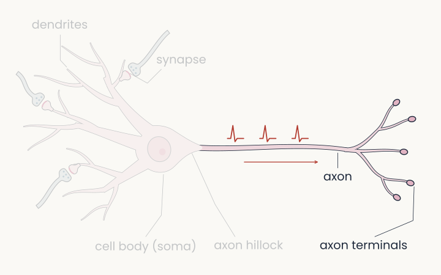
The same neuron drawing with the axon and the axon terminals highlighted and small spikes travelling along the axon to the right; the rest is faded
Open full-size figure
- The dendrites collect inputs from other neurons: at each synapse, an incoming spike becomes a small electrical current
- The cell body (soma) integrates them; past a threshold, the axon hillock fires a spike, a brief electrical pulse
- The spike travels down the axon to the synaptic terminals: the inputs of the next neurons
- Output: spikes; their number per second is the firing rate
Slide 6
At a synapse: a spike becomes a current
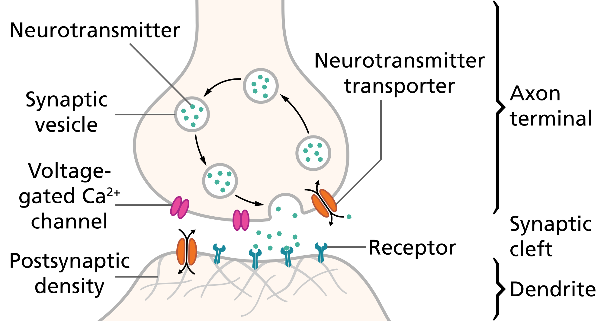
Schematic of a chemical synapse: the axon terminal of the presynaptic neuron holds vesicles filled with neurotransmitter; an arriving action potential opens voltage-gated calcium channels, vesicles fuse and release neurotransmitter into the synaptic cleft; it binds to receptors on the postsynaptic dendrite, which open and let ions flow in
Open full-size figure
- A spike reaching the axon terminal releases neurotransmitter into the gap
- It binds receptors on the next neuron, which open channels: ions flow in, a small current
- Excitatory synapses push the neuron toward firing, inhibitory ones away; the currents of many synapses roughly add up at the soma
- How much current one spike causes, the synaptic strength, is the main thing learning changes

Slide 8
From a neuron to a model neuron
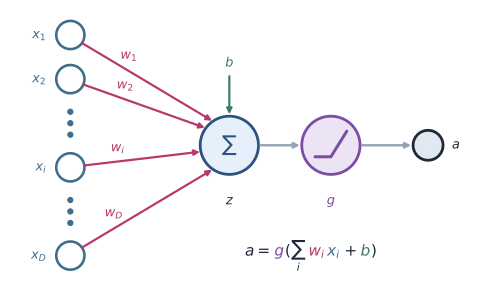
The model neuron: inputs x1 to xD, each with its weight w1 to wD, summed with a bias b into z, passed through the nonlinearity g, giving the output a = g(z)
Open full-size figure
- Inputs : the firing rates of the neurons that connect to it
- Weights : the strengths of those synapses, positive (excitatory) or negative (inhibitory) (minute paper)
- Sum , with a bias : the currents adding up at the soma
- Nonlinearity and output : the threshold at the axon hillock, and the firing rate
- We drop spike timing, dendrites and chemistry: a point neuron
Slide 9
Building the neuron: inputs, weights and sum
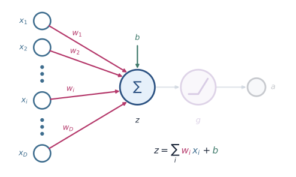
The complete model neuron with the inputs x1 to xD, their weights w1 to wD, the bias b and the summation node in full colour, and the nonlinearity g and the output a faded. The equation reads z equals the sum over i of w i x i plus b
Open full-size figure
- Each of the inputs is a number: another neuron's output, or a stimulus feature such as a pixel
- Each has a weight , positive (excitatory) or negative (inhibitory). Their sum, , is the pre-activation
- Learning changes the weights and the bias. First we set them by hand
Slide 10
The weighted sum is a dot product
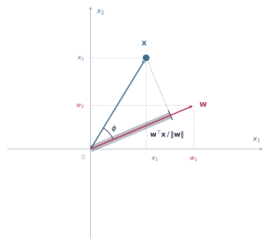
Axes x1 and x2. The input vector x in blue and the weight vector w in magenta, both from the origin, at an angle phi; a dark band along w marks the projection of x onto w, of length w transpose x over the length of w
Open full-size figure
- Stack the inputs and weights into vectors : the weighted sum is their dot product
- Geometry (left): , the length of the projection of onto , times
- Aligned with → large; perpendicular → zero; opposite → negative. The neuron asks how much of is in the input
Slide 11
A neuron's weights set a decision boundary
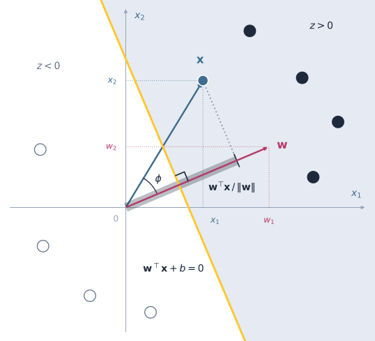
The same axes, w and x as on the previous slide, plus the decision boundary, the gold line where w transpose x plus b equals zero, perpendicular to w. The side where z is positive is shaded and holds filled dots; hollow dots lie on the other side. The projection of x onto w passes the line, so x falls on the positive side
Open full-size figure
- The neuron computes ; its decision boundary is the line where
- is perpendicular to the boundary and points to the side where ; slides the line without turning it
- Add a threshold, and the neuron fires only on that side: one neuron is a linear classifier, the same readout that read context from the hypothetical three-neuron populations of the last two lectures (there, a plane in 3 units)
- Every readout in this lecture is one model neuron
Slide 12
One weight vector, two readings
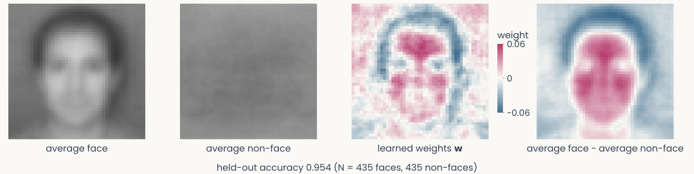
Four 48 by 48 pixel images in a row: the average face, the average non-face, the weights w of a readout trained to tell faces from other objects in Caltech-101 photographs, drawn with positive weights in magenta and negative in blue, and the average face minus the average non-face in the same colours. The weight image has a face-like layout of eyes, nose and mouth. Underneath, the readout's accuracy on held-out photographs
Open full-size figure
- One neuron, one weight per pixel (2,304), trained to answer "face or not?"
- As a boundary: it says "face" when . As a template: drawn as an image, has the layout of a face, and inputs that look like it give the largest
- Magenta weights push toward "face", blue toward "non-face". The weights best separate the classes; they are not the average face
Slide 13
A neuron is a feature detector: template matching
![One unit of AlexNet's first layer: its weights shown as a small colour image of an oriented edge. Three inputs of the same length: the same pattern, the pattern rotated by 90 degrees, and a different pattern; under each, the unit's response relative to the first: 1.00 for the same pattern, 0.00 rotated, 0.02 for the different pattern. Right, the tuning curve: the response as the pattern is rotated from 0 to 180 degrees, 1 at 0 degrees, falling to 0 by about 45 degrees, 0 at 90, with a small bump near 160](../images/2026-10-08/template_unit.svg)
One unit of AlexNet's first layer: its weights shown as a small colour image of an oriented edge. Three inputs of the same length: the same pattern, the pattern rotated by 90 degrees, and a different pattern; under each, the unit's response relative to the first: 1.00 for the same pattern, 0.00 rotated, 0.02 for the different pattern. Right, the tuning curve: the response as the pattern is rotated from 0 to 180 degrees, 1 at 0 degrees, falling to 0 by about 45 degrees, 0 at 90, with a small bump near 160
Open full-size figure- A unit of the network you analyse in the assignments: its weights , drawn as an image, look like the pattern it detects; rotating the input traces its tuning curve (right)
- and every input have length 1, so is the cosine of their angle: 1 when looks like . The weights act as a template
Slide 14
Building the neuron: activation and output
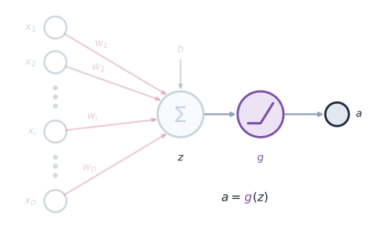
The same model neuron with the inputs, weights, bias and sum faded, and z, the nonlinearity g and the output a in full colour. The equation reads a equals g of z
Open full-size figure
- : the nonlinearity, most often ReLU,
- The output is the neuron's activation, its stand-in for a firing rate
- Why nonlinear? A real neuron fires nothing below threshold, then faster as its input grows
Slide 15
Transfer functions: the nonlinearity

Five transfer-function curves on one set of axes: ReLU (thick), leaky ReLU, sigmoid, tanh and GELU
Open full-size figure- A real neuron's f–I curve (firing rate against input current): 0 below threshold, then rising, then saturating
- History: a step (McCulloch & Pitts 1943, the perceptron), then sigmoid and tanh, smooth enough for backpropagation (1986), then ReLU (2010s), then GELU in transformers
- None is exact: ReLU and GELU never saturate, the sigmoid never reaches 0, tanh, leaky ReLU and GELU give negative "rates"
- ReLU (thick line) dominates: cheap, and deep networks train well with it
Slide 16
From weights set by hand to weights learned
The complete single neuron: weighted inputs summed with a bias into z, z passed through the nonlinearity g, giving the output a, labelled a = g(z)
Open full-size figure- So far we chose and by hand. A cortical neuron has thousands of synapses, a network millions, even billions, of weights: the weights must be learned from examples
- Learning needs a loss, one number that measures how wrong the outputs are, and gradient descent, which changes every weight to lower it
- The nonlinearity sets the kind of output and so the loss: a threshold gives yes or no (perceptron), no nonlinearity () a number (linear regression), a sigmoid a probability (logistic regression), a softmax a probability per class (a soft pick of the largest)
Slide 17
A network maps inputs to outputs
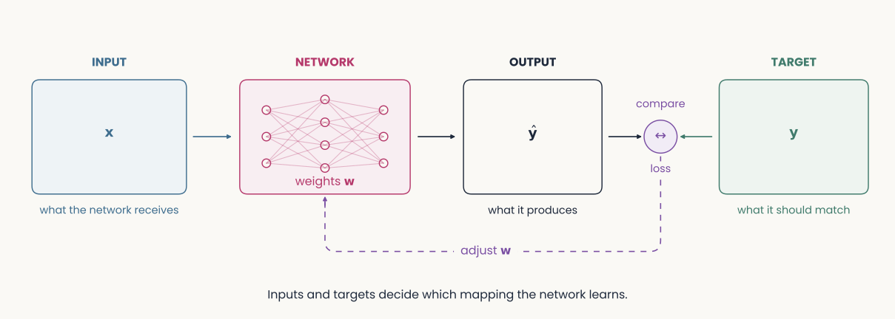
A diagram from left to right: an input x goes into a network drawn as layers of units with weights w, which produces an output y hat. The output is compared with a target y; the comparison gives the loss, and a dashed arrow labelled adjust w runs back into the network. Caption: inputs and targets decide which mapping the network learns
Open full-size figure
- Training adjusts the weights so that, on many examples, the output matches the target. To train a network, choose inputs and targets
Slide 21
Where does the target come from?
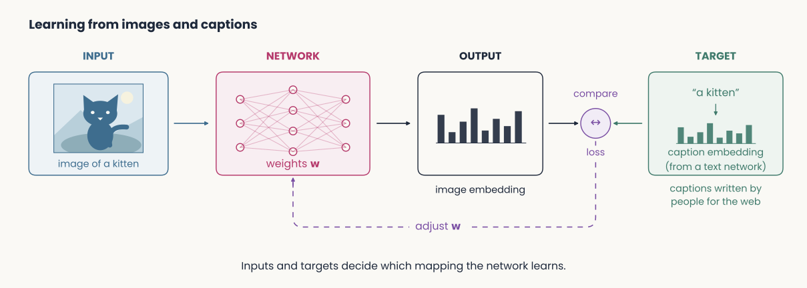
The same diagram for images and captions: the input is an image of a kitten, the output is an image embedding, and the target is the embedding of its caption, a kitten, computed by a text network; captions written by people for the web
Open full-size figure
- Image → its caption, written by people for the web. An image network and a text network turn each into an embedding, and the two embeddings are compared. The training data decide which mapping the network learns
Slide 22
How can a readout learn its weights from labeled examples?
Slide 23
The first learning neuron: the perceptron
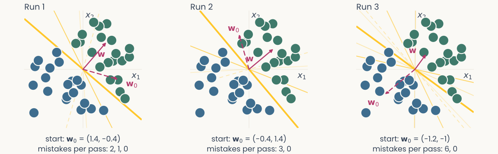
Three runs of the perceptron rule without a bias, on the same 2-D points separable by a line through the origin, each from a different starting weight vector. In each panel the decision line after every update is drawn from faint to dark, ending in a solid gold line that separates the classes, with the starting and final weight vectors as magenta arrows; under each panel, the mistakes per pass fall to zero
Open full-size figure
- Rosenblatt (1958): a model neuron with a threshold that learns its weights from labeled examples, built in hardware
- The rule is a heuristic: after a mistake, move toward the missed example, or away from a false alarm. No loss lies behind it, yet if a line separates the classes, it stops (right)
- It learns from its mistakes: changes only when the neuron is wrong
Slide 24
Which way is downhill? From derivative to gradient
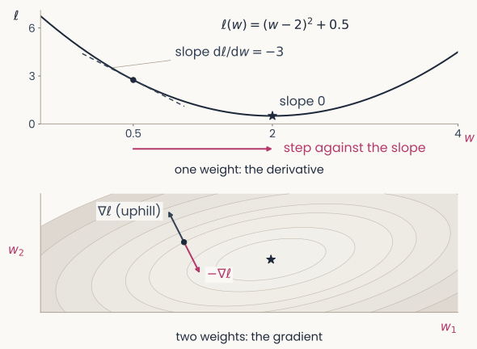
Two panels. Top, one weight: a U-shaped loss curve over w with a dot at w = 0.5, its tangent of slope minus 3, an arrow pointing toward the minimum, labelled step against the slope, and the minimum marked slope 0. Bottom, two weights: elliptical contours of the loss over w1 and w2 with the minimum marked; at a starting point, a gray arrow perpendicular to the contour labelled gradient, uphill, and a magenta arrow in the opposite direction labelled minus the gradient
Open full-size figure
- The loss is a function of the weight: one number saying how wrong the outputs are
- One weight: the derivative is its slope. Slope negative: increase ; positive: decrease it. At the minimum the slope is 0
- Many weights: the gradient lists one slope per weight, : how fast grows when alone grows a little
- The gradient points uphill. Gradient descent: a small step against it, , again and again
Slide 25
The delta rule (Widrow–Hoff): step down a smooth error
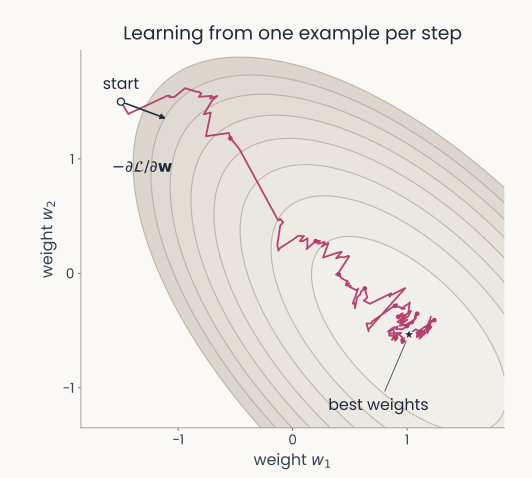
Contours of the loss for a two-weight linear regression, with the best weights marked by a star. From the start at the upper left, the path of the delta rule with a constant learning rate, one example per step, winds downhill toward the star; a short arrow at the start shows the direction minus the gradient
Open full-size figure
Widrow & Hoff (1960): write a loss and step down its slope. Drop the threshold so the loss is smooth: the output is .
- The perceptron is a special case: the same rule with the thresholded output as , so its error is 0 unless the neuron is wrong
- One recipe: change each weight by × error × input
Slide 26
Try it: perceptron and delta rule, one example at a time
- Perceptron: correct, nothing changes; a mistake, moves. Delta rule: every example moves a little. Watch the loss after each update. Play with it after class
Slide 27
Logistic regression: a probability, then its error
- Labels coded or . The sigmoid converts the logit into , the probability of class 1
- Minimize the cross-entropy , minus the log of the probability given to the correct class.: 0 if certain and right, 0.69 for a 50/50 guess, 2.30 if confident and wrong
- Gradient , so
- Same recipe, another loss: again × error × input
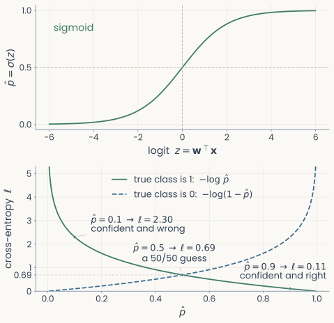
Two stacked panels. Top: the sigmoid curve, probability p-hat rising from 0 to 1 as the logit z goes from negative to positive, crossing 0.5 at z equals 0. Bottom: cross-entropy against p-hat; for a true class of 1 the loss falls from above 5 to 0 as p-hat goes to 1, and for a true class of 0 it rises the other way
Open full-size figure
Slide 28
What if no line separates the classes?
Slide 29
Past the XOR wall: stack neurons into layers
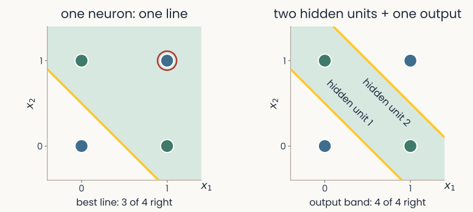
Two panels with the four XOR points, blue at (0,0) and (1,1), green at (0,1) and (1,0). Left, one neuron, one line: the best single line gets 3 of the 4 right and one point is circled as wrong. Right, two hidden units, then one output: hidden unit 1 draws the line x1 + x2 = 0.5 and hidden unit 2 the line x1 + x2 = 1.5; the band between them is the output's green region, and all 4 points are right
Open full-size figure
- One neuron draws one line: at best 3 of the 4 XOR points (left), so the perceptron's mistakes never reach zero
- Two hidden units draw two lines, and an output unit that fires between them gets all 4 (right). Stacked neurons draw boundaries that one line cannot
Slide 30
The network that solves XOR
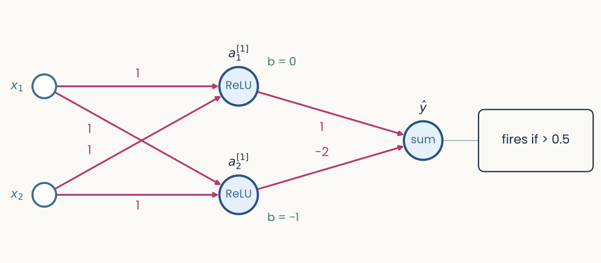
A 2-2-1 network drawn left to right, the same drawing as the backpropagation slides that follow. Inputs x1 and x2; magenta weights of 1 from each input to each of the two hidden units; green bias labels b = 0 on hidden unit 1 and b = minus 1 on hidden unit 2; weights 1 and minus 2 from the hidden units to the output y hat, which fires if above 0.5
Open full-size figure
- Set by hand: hidden units and ; output , fires above 0.5. Right on all four
- Without the ReLU, the layers collapse into one matrix, : one line. How can a network find such weights itself?
Slide 31
The hidden layer re-represents the input
| 0 | 0 | 0 | 0 | 0 |
| 0 | 1 | 1 | 0 | 1 |
| 1 | 0 | 1 | 0 | 1 |
| 1 | 1 | 2 | 1 | 0 |
- (0,1) and (1,0) coincide in the hidden layer's coordinates : one line separates the classes
- The hidden layer turns XOR into a linearly separable problem for the readout
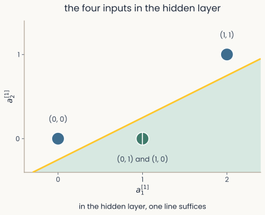
The four XOR inputs in hidden-unit coordinates h1 and h2: blue (0,0) at the origin, green (0,1) and (1,0) together at (1,0), blue (1,1) at (2,1). One solid gold line separates the green point, on the shaded side, from the two blue points. The caption reads: in the hidden layer, one line suffices
Open full-size figure
Slide 32
Training the hidden layers: backpropagation
Slide 33
Backpropagation: a long and disputed history
- 1969: Minsky and Papert show that a perceptron cannot compute XOR. Nobody knows how to train hidden layers, and interest in neural networks fades
- 1970–1974: Linnainmaa describes the general algorithm (reverse-mode automatic differentiation); Werbos proposes it for training networks in his PhD thesis
- 1986: Rumelhart, Hinton and Williams show that hidden units trained this way learn useful internal representations. Their Nature paper made backprop the standard method
- Who deserves the credit is still argued. Hinton's 2024 Nobel Prize in Physics, shared with Hopfield, cited the Boltzmann machine, not backprop; his 2018 Turing Award, shared with Bengio and LeCun, was for deep learning as a whole
Slide 34
The credit-assignment problem
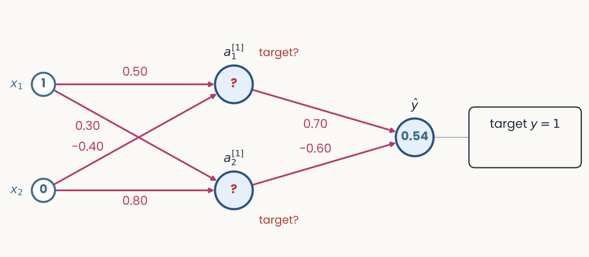
A 2-2-1 network drawn left to right. Inputs x1 = 1 and x2 = 0; six magenta weights; two hidden units marked with red question marks and the words target?; an output unit at 0.54; a box on the right reading target y = 1
Open full-size figure
- The same network before learning: small weights of both signs. The output is 0.54, the target 1. Which of the six weights should change, and by how much?
- For a readout's weights, logistic regression gave the gradient, . A hidden unit has no target: what should (unit 1 of layer [1]) have been? This is credit assignment
Slide 35
The idea: nudge every weight toward the target
- Compare the output with its target: the difference, here , is the error. Its sign says which way the output should move (up), its size how far
- The goal: change every weight a little, so that the next time this input is shown, the output lands closer to its target
- For each weight, ask: if it grew slightly, would the loss go up or down, and how fast? That slope is the gradient ; step against it
- A weight into the output sees the error directly. A hidden unit acts only through the units it feeds, so it gets the output error sent back along the same connection, scaled by its weight
- Activity flows forward to the output; error flows backward to every weight
Slide 37
Step 1: the forward pass
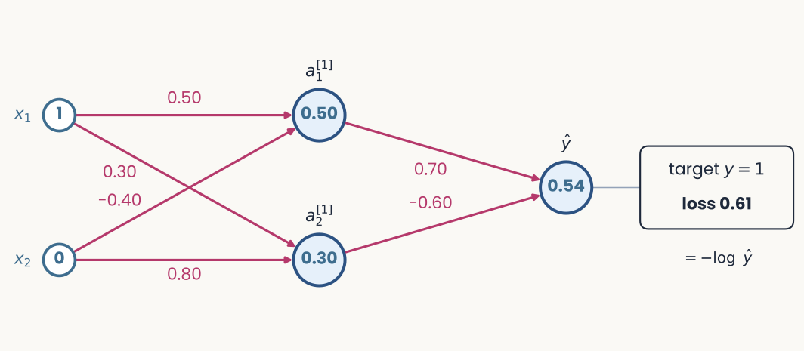
The same network after the forward pass. The box on the right now reads target y = 1, loss 0.61, and underneath, equals minus log y hat
Open full-size figure
- Run the input through, layer by layer, and keep every and for the backward pass
- , ,
- The loss , here for this one example, is the cross-entropy:
Slide 38
Step 2: the error at the output
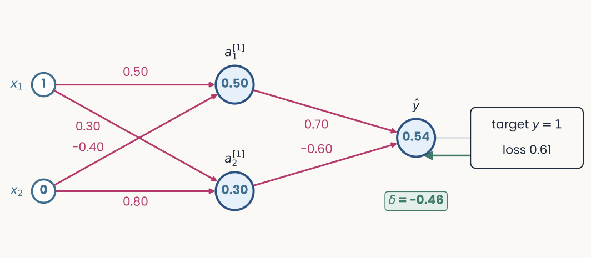
The same network. A green arrow runs back from the loss box to the output unit, and a green tag under the output reads delta = minus 0.46
Open full-size figure
- With a sigmoid output and cross-entropy, the error is prediction minus target:
- Negative: the output was too low and should rise. The error is the target-comparison every later step builds on
Slide 39
Step 3: send the error backward
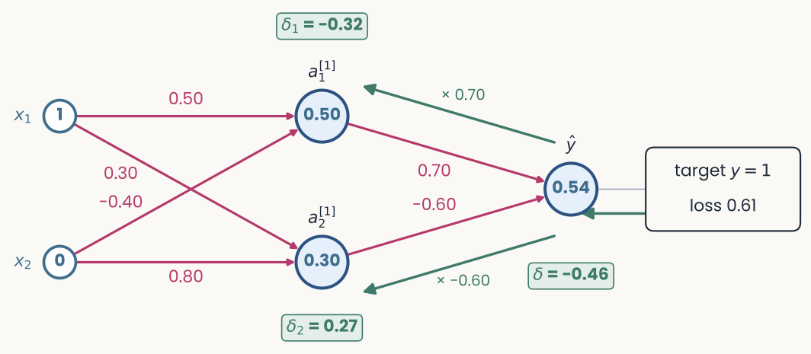
The same network. Green arrows run back from the output to each hidden unit, labelled times 0.70 and times minus 0.60. Green tags read delta 1 = minus 0.32 next to a1 of layer 1 and delta 2 = 0.27 next to a2 of layer 1
Open full-size figure
- Hidden unit 1's error = output error × the weight linking them × its ReLU slope (1 if on, 0 if off):
- Each hidden unit gets its own error, even its own sign: should have been higher, lower
Slide 40
Step 4: every gradient is error × activity
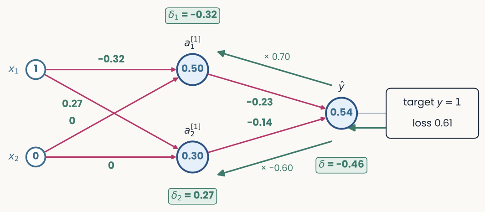
The same network with the weights replaced by their gradients in green: minus 0.32 and 0.27 on the connections from x1, 0 on both connections from x2, minus 0.23 and minus 0.14 on the connections into the output. The error tags stay in place
Open full-size figure
- the gradient of a weight is the error of the unit it feeds × the activity of the unit it comes from, e.g. . Inputs that were off give 0
- One step on all weights and biases, , then show the same input again: goes from 0.54 to 0.82, the loss from 0.61 to 0.20
Slide 41
Why it works: the chain rule, run backward
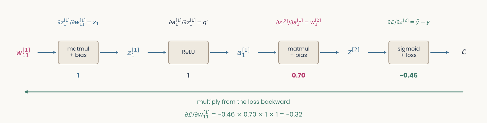
A chain of five boxes, w11 of layer 1, z1 of layer 1, a1 of layer 1, z of layer 2, and the loss script L, joined by arrows. Above each arrow its local derivative: x1, g prime, w1 of layer 2, and y hat minus y; below each arrow its value: 1, 1, 0.70, and minus 0.46. Underneath: d script L by d w11 of layer 1 equals minus 0.46 times 0.70 times 1 times 1 equals minus 0.32, multiply from the loss backward
Open full-size figure
- The loss depends on the weight (from to ) through a chain: . The chain rule multiplies the local slopes along it, as steps 2 to 4 did
- Backprop is the chain rule of multivariable calculus, applied layer by layer. You will not be asked to derive it; if you have taken multivariable calculus, the derivation is in the backpropagation notes
Slide 42
Try it: train a small network on 2-D data
- One hidden unit draws one line; add units and layers and the boundary bends. Every weight is learned by the same four steps
Slide 43
Recap
- One model neuron: . Its weights set a decision boundary and act as a template: a readout is one neuron
- Training: choose inputs and targets, then lower a loss. The perceptron, the delta rule and logistic regression all change a weight by × error × input
- The gradient extends the derivative to many weights; gradient descent takes small steps against it
- One neuron draws one line; a hidden layer makes XOR separable. Backprop sends the error back, and every gradient is error × activity
Slide 44
Further reading for the research trail
Optional: a few research-trail entries over the semester. Any paper mentioned in any lecture qualifies, but papers from this block are preferred.
- Rosenblatt Psychological Review 1958: the perceptron, proposed as a model of the brain
- Zipser & Andersen Nature 1988: backprop-trained hidden units respond like parietal neurons
- Lehky & Sejnowski Nature 1988: hidden units trained on shading look like visual cortex neurons
- Lillicrap et al. Nat Rev Neurosci 2020: could the brain do something like backprop?
- Muttenthaler et al. ICLR 2023: the training objective, not size, sets the match to human choices
- Francioni et al. Nature 2026: neurons with opposite effects get error signals of opposite sign
Slide 45
Minute paper
Submit on Canvas → Minute papers → Minute Paper 9 (access code read out in class).
Write three brief points in your own words:
- In the model neuron, what does a weight stand for in a real neuron, and what does a negative weight mean?
- Something you do not yet understand, or a question still open
- Another idea you found interesting, and why it matters for brains, behavior or AI
Credit for a thoughtful attempt, not for being correct.